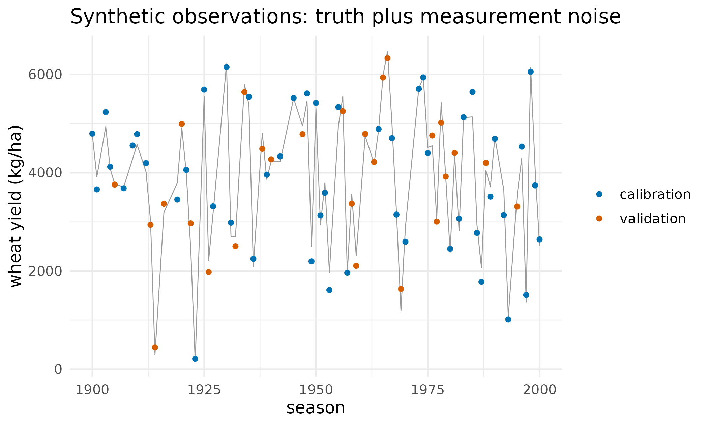
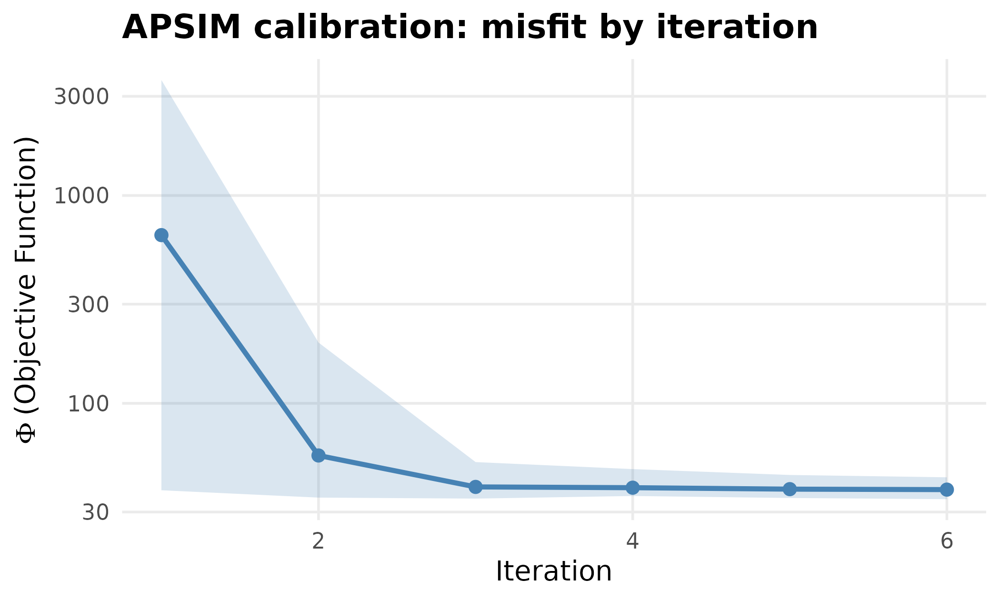
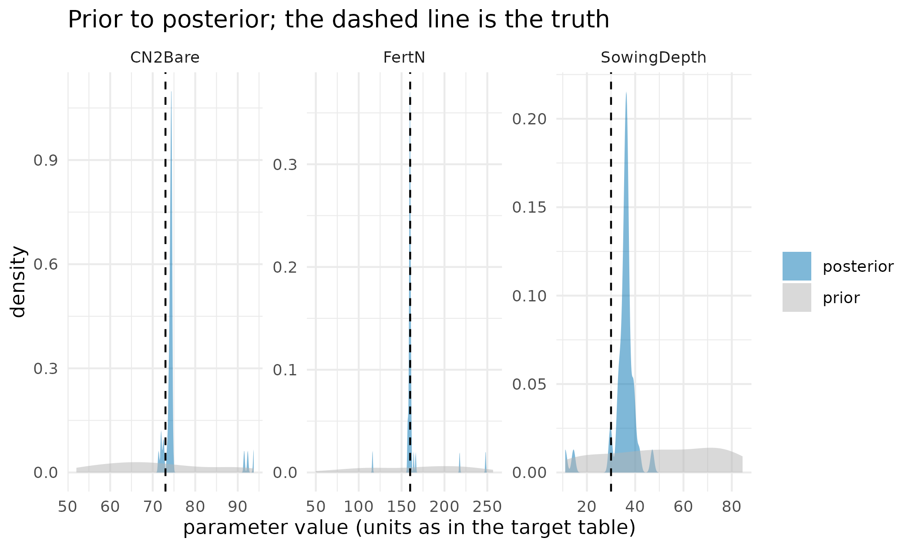
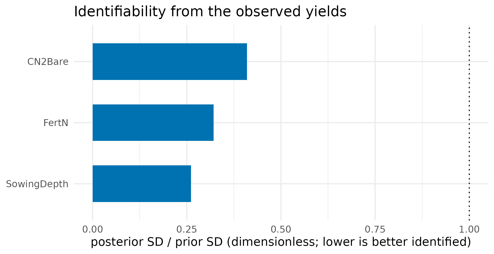
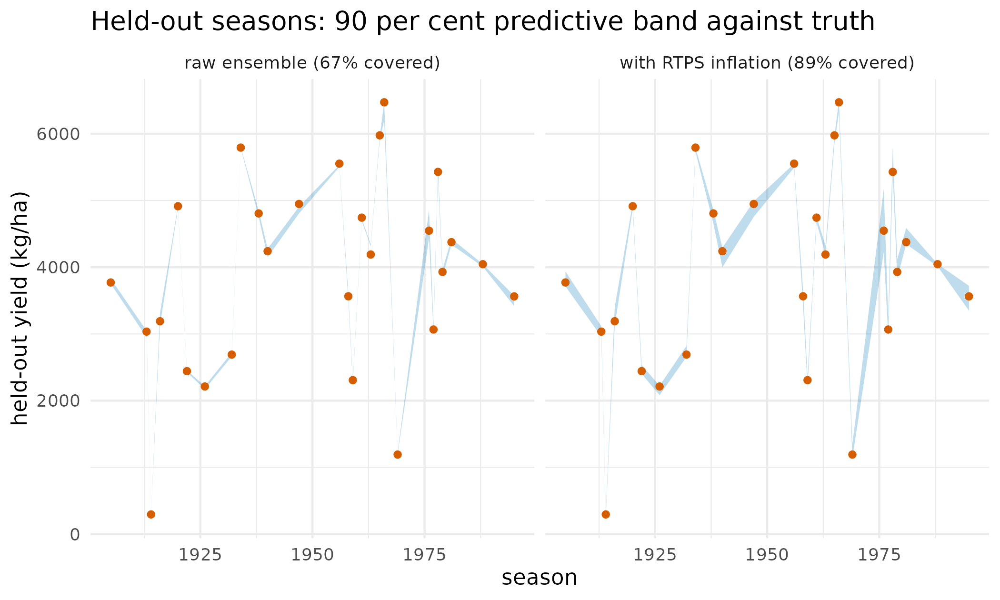
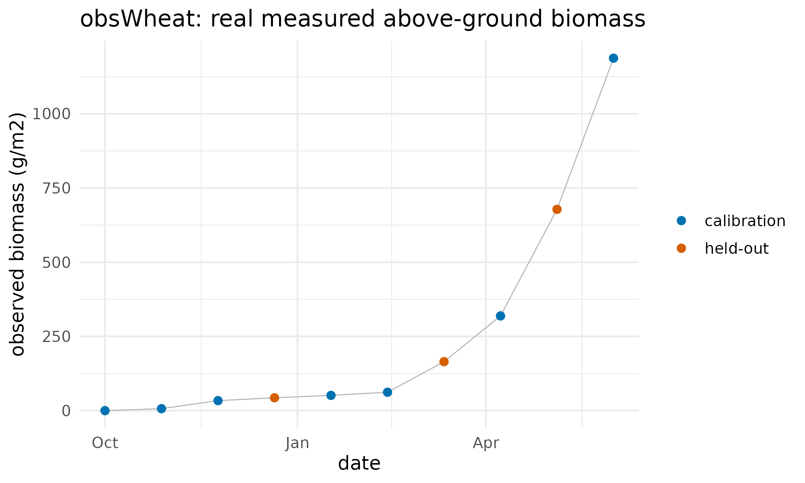
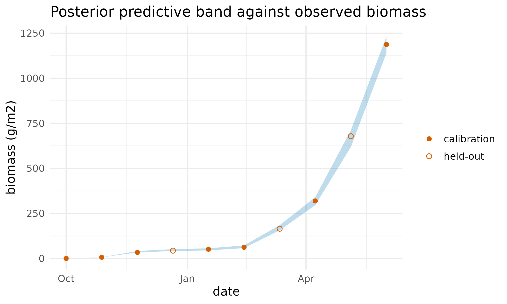

Can PESTO recover APSIM's own parameters?
Source:vignettes/apsim-case-study.Rmd
apsim-case-study.RmdWhy
I have APSIM configured for my site and a calibration method I have only seen work on toy problems. Before I trust it with parameters I cannot measure, I want two things answered: if I hide a set of APSIM parameters I already know and hand the method only noisy yields, does it get them back, and does it report clearly which of them the data could not pin down? And on real measured biomass, where there is no truth to check against, does it agree with an established calibrator? This vignette answers both against the APSIM Wheat example, in two parts.
Part 1 is a synthetic-truth recovery experiment, sometimes called a
twin experiment: fix known-true APSIM parameters, simulate per-season
wheat yields, add measurement noise, then try to recover the truth from
the noisy yields. Because the truth is known by construction,
correctness is verifiable without any field data, which is the cleanest
way to test a calibration method before confronting real observations.
Part 2 drops the known truth and calibrates physiological parameters to
real observed wheat biomass, cross-checking PESTO’s ensemble posterior
against the apsimx package’s own point optimiser.
What
The forward model in both parts is APSIM itself, driven in process
through apsim_callback() and
wrapped in a pesto_forward_model(),
so a matrix of parameter realisations maps to a matrix of simulated
outputs. pesto_ies_callback()
conditions the prior ensemble on the calibration observations, and as_manifest() wraps the
result as the hash-verified record a downstream tool consumes. The
coupling mechanics are the subject of Wiring your own simulator into
PESTO; this vignette is the calibration counterpart, and reads the
results those verbs produced.
rds <- system.file("extdata", "apsim_case_study",
"apsim_wheat_calibration_result.rds", package = "PESTO")
if (!nzchar(rds)) {
rds <- file.path("..", "inst", "extdata", "apsim_case_study",
"apsim_wheat_calibration_result.rds")
}
R <- readRDS(rds)
spec <- R$spec
pnm <- R$pnmThe results below are frozen real outputs of the calibration, shipped
with the package and read from disk here; APSIM is not run at build
time, because it is an external simulator and is absent from package
check farms. They were produced by APSIM 2026.5.8046.0 through
apsimx 2.8.235, PESTO 0.8.0.9000, seed 20260628, on
2026-06-28. The runnable driver is
system.file("case_studies/apsim_wheat_calibration.R", package = "PESTO").
Do
The calibration target
Three parameters are estimated, chosen from a sensitivity screen of the real model to span the identifiability spectrum: two strong and mechanistically distinct levers, soil water and nitrogen, and one deliberately weak lever.
tab_target <- data.frame(
Parameter = pnm,
Role = vapply(spec, `[[`, "", "role"),
Unit = vapply(spec, `[[`, "", "unit"),
Truth = vapply(spec, `[[`, 0, "truth"),
`Prior range` = sprintf("%g to %g",
vapply(spec, `[[`, 0, "lo"),
vapply(spec, `[[`, 0, "hi")),
check.names = FALSE, row.names = NULL
)
knitr::kable(
tab_target,
caption = "Calibration target: the known truth and the uniform prior."
)| Parameter | Role | Unit | Truth | Prior range |
|---|---|---|---|---|
| CN2Bare | soil runoff (water limitation) | curve number | 73 | 50 to 95 |
| FertN | fertiliser nitrogen (N limitation) | kg N/ha | 160 | 40 to 260 |
| SowingDepth | sowing depth (weak lever) | mm | 30 | 10 to 90 |
The synthetic observations
The truth run produces one wheat yield per season. Gaussian measurement noise of 250 kg/ha is added, and the seasons are split into a calibration set used in the fit and a held-out validation set used only to test out-of-sample prediction.
tab_obs <- data.table::data.table(
year = R$season_year,
truth = R$y_truth,
obs = R$y_obs_all,
set = ifelse(seq_along(R$y_truth) %in% R$cal_idx,
"calibration", "validation")
)
ggplot2::ggplot(tab_obs, ggplot2::aes(year, obs, colour = set)) +
ggplot2::geom_line(ggplot2::aes(y = truth), colour = "grey60",
linewidth = 0.3) +
ggplot2::geom_point(size = 1.3) +
ggplot2::scale_colour_manual(
values = c(calibration = PAL[1], validation = PAL[2]), name = NULL
) +
ggplot2::labs(
x = "season", y = "wheat yield (kg/ha)",
title = "Synthetic observations: truth plus measurement noise"
) +
ggplot2::theme_minimal(base_size = 12)
Per-season wheat yield across the multi-decade run. The grey line is the noise-free truth; the points are the synthetic observations, split into the seasons used for calibration and the seasons held out for validation.
The calibration call
This is the whole calibration, shown for reference; the frozen fit is loaded above.
fm <- apsim_callback(
template = "Wheat.apsimx",
param_map = list(
CN2Bare = ".Simulations.Simulation.Field.Soil.SoilWater.CN2Bare",
FertN = ".Simulations.Simulation.Field.Fertilise at sowing.Amount",
SowingDepth =
".Simulations.Simulation.Field.Sow using a variable rule.SowingDepth"
),
output_extractor = function(sim) as.numeric(sim$Yield)
)
# Run APSIM realisations in parallel; hold out validation seasons via obs_sd.
fm <- pesto_forward_model(fm, parallel = "multicore")
fit <- pesto_ies_callback(fm, prior_ensemble = prior, obs = obs_all,
obs_sd = sd_vec, noptmax = 6)Convergence
tab_phi_wide <- data.table::dcast(
R$fit$phi, iteration ~ realisation, value.var = "phi"
)
vec_complete <- !vapply(tab_phi_wide, anyNA, logical(1L))
plot_phi(tab_phi_wide[, which(vec_complete), with = FALSE],
title = "APSIM calibration: misfit by iteration")
Objective function by iteration for the APSIM calibration. The ribbon spans the ensemble’s minimum to maximum misfit and the line its mean: the misfit drops sharply over the first iterations and then plateaus, which is the ensemble reaching the noise floor of the synthetic observations.
Parameter recovery
tab_recovery <- data.table::rbindlist(lapply(pnm, function(p) {
q <- stats::quantile(R$post[, p], c(0.05, 0.5, 0.95), na.rm = TRUE)
data.table::data.table(
Parameter = p,
Truth = spec[[p]]$truth,
`Posterior mean` = round(mean(R$post[, p], na.rm = TRUE), 1),
`5%` = round(q[1], 1),
`95%` = round(q[3], 1),
`Truth in 90% band` = ifelse(
spec[[p]]$truth >= q[1] & spec[[p]]$truth <= q[3], "yes", "no"
)
)
})) # ends the loop over calibrated parameters
knitr::kable(
tab_recovery,
caption = "Recovery of the known truth from noisy per-season yields."
)| Parameter | Truth | Posterior mean | 5% | 95% | Truth in 90% band |
|---|---|---|---|---|---|
| CN2Bare | 73 | 75.3 | 72.0 | 91.6 | yes |
| FertN | 160 | 162.4 | 157.2 | 169.1 | yes |
| SowingDepth | 30 | 35.1 | 28.9 | 40.1 | yes |
tab_dens <- data.table::rbindlist(lapply(pnm, function(p) rbind(
data.table::data.table(Parameter = p, value = R$prior[, p], dist = "prior"),
data.table::data.table(Parameter = p, value = R$post[, p],
dist = "posterior")
))) # ends the loop over calibrated parameters
tab_truth <- data.table::data.table(
Parameter = pnm, truth = vapply(spec, `[[`, 0, "truth")
)
ggplot2::ggplot(tab_dens, ggplot2::aes(value, fill = dist)) +
ggplot2::geom_density(alpha = 0.5, colour = NA) +
ggplot2::geom_vline(data = tab_truth, ggplot2::aes(xintercept = truth),
linetype = "dashed", linewidth = 0.5) +
ggplot2::facet_wrap(~ Parameter, scales = "free") +
ggplot2::scale_fill_manual(
values = c(prior = "grey70", posterior = PAL[1]), name = NULL
) +
ggplot2::labs(
x = "parameter value (units as in the target table)", y = "density",
title = "Prior to posterior; the dashed line is the truth"
) +
ggplot2::theme_minimal(base_size = 11)
Prior and posterior densities for each parameter, with the true value marked by a dashed line. All three posteriors contract substantially and all three brackets the truth; the weak lever, sowing depth, contracts as much as the others but settles furthest from its true value.
Identifiability: what the data can constrain
A parameter is well identified when conditioning on the data collapses its spread far below the prior. The ratio of posterior to prior standard deviation makes that explicit, with the caveat that this frozen result comes from a release whose smoother under-disperses, so the ratios are comparable with each other but are all smaller than the current smoother would produce.
tab_ident <- data.table::data.table(
Parameter = pnm,
ratio = vapply(pnm, function(p) {
stats::sd(R$post[, p], na.rm = TRUE) / stats::sd(R$prior[, p])
}, 0)
)
ggplot2::ggplot(
tab_ident, ggplot2::aes(stats::reorder(Parameter, ratio), ratio)
) +
ggplot2::geom_col(fill = PAL[1], width = 0.6) +
ggplot2::geom_hline(yintercept = 1, linetype = "dotted") +
ggplot2::coord_flip() +
ggplot2::labs(
x = NULL,
y = "posterior SD / prior SD (dimensionless; lower is better identified)",
title = "Identifiability from the observed yields"
) +
ggplot2::theme_minimal(base_size = 12)
Ratio of posterior to prior standard deviation by parameter. A low value means conditioning on the yields contracted the parameter’s spread; a value near the dotted line at one would mean the data said almost nothing about it. Read the ratios against each other rather than absolutely: the release that produced this result under-disperses, so every posterior here is narrower than it should be.
Out-of-sample validation, and the under-dispersion caveat
Using the posterior ensemble to predict the held-out seasons tests genuine out-of-sample skill. The finding is that the raw ensemble’s predictive band is too narrow.
oe <- R$obs_ensemble
band <- function(mat) {
data.table::data.table(
year = R$season_year[R$val_idx],
truth = R$y_truth[R$val_idx],
lo = apply(mat[, R$val_idx, drop = FALSE], 2L, stats::quantile, 0.05,
na.rm = TRUE),
hi = apply(mat[, R$val_idx, drop = FALSE], 2L, stats::quantile, 0.95,
na.rm = TRUE)
)
}
cov_of <- function(b) mean(b$truth >= b$lo & b$truth <= b$hi)
b_base <- band(oe)
cov_base <- cov_of(b_base)
b_base[, panel := sprintf("raw ensemble (%.0f%% covered)", 100 * cov_base)]
lst_panels <- list(b_base)
cov_inf <- NA_real_
if (!is.null(R$inflation)) {
b_inf <- band(R$inflation$obs_ensemble)
cov_inf <- cov_of(b_inf)
b_inf[, panel := sprintf("with RTPS inflation (%.0f%% covered)",
100 * cov_inf)]
lst_panels <- list(b_base, b_inf)
}
tab_band <- data.table::rbindlist(lst_panels)
ggplot2::ggplot(tab_band, ggplot2::aes(year)) +
ggplot2::geom_ribbon(ggplot2::aes(ymin = lo, ymax = hi), fill = PAL[1],
alpha = 0.25) +
ggplot2::geom_point(ggplot2::aes(y = truth), colour = PAL[2], size = 1.3) +
ggplot2::facet_wrap(~ panel) +
ggplot2::labs(
x = "season", y = "held-out yield (kg/ha)",
title = "Held-out seasons: 90 per cent predictive band against truth"
) +
ggplot2::theme_minimal(base_size = 11)
Held-out seasonal yields against the posterior 90 per cent predictive band, without and with covariance inflation. The panel headings carry the realised coverage of each band; the raw band misses several points that the inflated band contains.
Read that panel as a pre-fix figure. The frozen result loaded above
was produced by PESTO 0.8.0.9000, whose smoother assimilated the same
unperturbed observation vector into every realisation, which is the
dominant cause of the narrow band shown here and one that inflation was
never going to reach. The development version perturbs the observations
per realisation under an ES-MDA schedule and recovers the analytic
posterior covariance on a problem with a closed-form answer, as
Posterior spread and observation perturbation in ?pesto_ies_callback
sets out and the ensemble-size sweep in My posterior looks too
confident: is the ensemble collapsing? demonstrates. Regenerating
this case study needs a machine with APSIM installed, so the panel above
still shows the earlier behaviour and the inflation comparison beside it
is calibrated against that behaviour rather than against the current
smoother. What survives the fix unchanged is the practice: report
coverage on your own held-out data, tune inflation to what you measure,
and treat coverage as measured rather than assumed.
The record the run emits
A calibrated run emits a portable, hash-verified manifest, so a downstream tool can validate and reuse the posterior without re-running APSIM.
man <- as_manifest(R$fit)
man@method
#> [1] "ies_callback"
man@schema_version
#> [1] "1.1.0"
man@noptmax
#> [1] 6Part 2: calibration to real observed data
Part 1 proved recovery against a known truth. Part 2 confronts real
field observations: the obsWheat dataset shipped with the
apsimx package (Miguez 2025), ten dates of measured wheat
above-ground biomass over a 2016-2017 season with Ames.met
weather. There is no known truth here, so the test is different: does
the calibrated model fit the observations, predict held-out ones, and
agree with an independent calibrator?
The two genuinely uncertain physiological parameters of the bundled
Wheat-opt-ex.apsimx model are calibrated: radiation-use
efficiency and the cultivar base phyllochron, which governs phenology.
They are the same parameters, model and data that the
apsimx package’s own optim_apsimx() example
optimises, which is what makes the comparison an independent cross-check
of PESTO’s ensemble posterior against a point optimum obtained by a
different method.
prd <- system.file("extdata", "apsim_case_study",
"apsim_realdata_result.rds", package = "PESTO")
if (!nzchar(prd)) {
prd <- file.path("..", "inst", "extdata", "apsim_case_study",
"apsim_realdata_result.rds")
}
P <- readRDS(prd)
P_spec <- P$spec
P_pnm <- P$pnm
tab_p2obs <- data.table::data.table(
date = P$obs_dates, biomass = P$y_obs,
set = ifelse(seq_along(P$y_obs) %in% P$cal_idx, "calibration", "held-out")
)
ggplot2::ggplot(tab_p2obs, ggplot2::aes(date, biomass, colour = set)) +
ggplot2::geom_line(colour = "grey70", linewidth = 0.3) +
ggplot2::geom_point(size = 2) +
ggplot2::scale_colour_manual(
values = c(calibration = PAL[1], `held-out` = PAL[2]), name = NULL
) +
ggplot2::labs(
x = "date", y = "observed biomass (g/m2)",
title = "obsWheat: real measured above-ground biomass"
) +
ggplot2::theme_minimal(base_size = 12)
Observed wheat above-ground biomass at ten dates through the season, split into the dates used for calibration and the dates held out. The measurements are real: the obsWheat dataset shipped with the apsimx package.
tab_est <- data.table::rbindlist(lapply(P_pnm, function(p) {
q <- stats::quantile(P$post[, p], c(0.05, 0.5, 0.95), na.rm = TRUE)
data.table::data.table(
Parameter = p,
Role = P_spec[[p]]$role,
Unit = P_spec[[p]]$unit,
`PESTO mean` = round(mean(P$post[, p], na.rm = TRUE), 2),
`5%` = round(q[1], 2),
`95%` = round(q[3], 2),
`apsimx optimum` = P_spec[[p]]$apsimx_opt,
Default = P_spec[[p]]$default,
`Optimum inside band` = ifelse(
P_spec[[p]]$apsimx_opt >= q[1] & P_spec[[p]]$apsimx_opt <= q[3],
"yes", "no"
)
)
})) # ends the loop over the two physiological parameters
knitr::kable(
tab_est,
caption = paste0(
"PESTO's posterior against the apsimx optim_apsimx() optimum, an ",
"independent calibrator, and against the model default."
)
)| Parameter | Role | Unit | PESTO mean | 5% | 95% | apsimx optimum | Default | Optimum inside band |
|---|---|---|---|---|---|---|---|---|
| RUE | radiation use efficiency | g/MJ | 1.71 | 1.48 | 2.15 | 1.5 | 1.2 | yes |
| Phyllochron | phenology (phyllochron) | degC.day | 100.05 | 77.26 | 119.50 | 87.6 | 120.0 | yes |
qb <- function(i) {
stats::quantile(P$obs_ensemble[, i], c(0.05, 0.95), na.rm = TRUE)
}
tab_fitb <- data.table::data.table(
date = P$obs_dates, obs = P$y_obs,
lo = vapply(seq_along(P$obs_dates), function(i) qb(i)[1], 0),
hi = vapply(seq_along(P$obs_dates), function(i) qb(i)[2], 0),
set = ifelse(seq_along(P$y_obs) %in% P$cal_idx, "calibration", "held-out")
)
ggplot2::ggplot(tab_fitb, ggplot2::aes(date)) +
ggplot2::geom_ribbon(ggplot2::aes(ymin = lo, ymax = hi), fill = PAL[1],
alpha = 0.25) +
ggplot2::geom_point(ggplot2::aes(y = obs, shape = set), colour = PAL[2],
size = 2) +
ggplot2::scale_shape_manual(
values = c(calibration = 16L, `held-out` = 1L), name = NULL
) +
ggplot2::labs(
x = "date", y = "biomass (g/m2)",
title = "Posterior predictive band against observed biomass"
) +
ggplot2::theme_minimal(base_size = 12)
Posterior predictive 90 per cent band for biomass at each observation date, with the observations overlaid. Filled points are the dates used in the fit; open points are the held-out dates the band was not conditioned on.
Read
Part 1 answers the first half of the question, and the answer is yes with one qualification. All 3 of the 3 parameters have the known truth inside their 90 per cent credible band. Accuracy separates them: the two strong levers land within 3 per cent of their true values, while the weak lever, sowing depth, settles 17 per cent above its truth and its band’s lower edge sits at 28.9 mm against a truth of 30 mm, so it is covered but only just.
The identifiability figure does not order the three the way the design intended, and that is worth stating rather than smoothing over. Conditioning contracts every parameter’s spread, to between 26 and 41 per cent of the prior spread, and by that measure the parameter chosen as the weak lever contracts most (SowingDepth, at 26 per cent) and the soil-runoff parameter least (CN2Bare, at 41 per cent). The ratio measures contraction relative to each parameter’s own prior width, which is not the same as the information the yields carry about it, and this frozen result comes from the release whose posterior spread is known to be too narrow across the board. What the pair of diagnostics supports jointly is the narrower claim: every parameter’s interval covers its truth, and the parameter the sensitivity screen marked as the weak lever is the one recovered least accurately.
The held-out panel is where the raw ensemble falls short. Its 90 per cent predictive band covers 67 per cent of the held-out seasons against a nominal 90, and with RTPS inflation applied that rises to 89 per cent. As stated above the panel, the dominant cause of the shortfall was the unperturbed-observation defect in PESTO 0.8.0.9000, since fixed, and the panel is retained as a pre-fix figure rather than re-run, because regenerating it needs a machine with APSIM installed. The practice it teaches is unchanged by the fix: measure coverage on held-out data and treat it as measured.
Part 2 answers the second half. On real obsWheat
biomass, with no truth to compare against, the apsimx point
optimum lies inside PESTO’s 90 per cent credible band for 2 of the 2
parameters, and both calibrators move in the same direction away from
the model default: a higher radiation-use efficiency, PESTO’s posterior
mean 1.71 against a default of 1.2, and a shorter base phyllochron, 100
against a default of 120. Two calibration engines built on different
principles, an ensemble smoother and a derivative-free point optimiser,
agree, and PESTO additionally reports the uncertainty a point optimum
does not carry. The held-out dates, excluded from the fit, fall within
the posterior predictive band at a rate of 100% over 3 points; with so
few held-out points that figure is indicative rather than a precise
coverage estimate.
Limits
Part 1’s truth is APSIM’s own output, so it establishes that the smoother inverts APSIM correctly and nothing about whether APSIM describes a real paddock; a structural error in the simulator would be invisible to a twin experiment by construction. Its noise model is Gaussian, independent across seasons and known, whereas real yield error is neither independent nor known. Part 2 has real observations but no truth, so its cross-check establishes agreement between two calibrators rather than correctness of either, and two methods can agree on the same wrong answer if they share the same forward model, which here they do. The held-out set in Part 2 carries 3 points, far too few to estimate coverage precisely, and the Part 1 coverage figures come from a superseded release of the smoother and are retained as a record of the earlier behaviour rather than as a current measurement. Both parts calibrate two or three parameters of a model that has hundreds, chosen by a sensitivity screen, so nothing here speaks to the behaviour of the method in a highly parameterised APSIM calibration. Neither part is re-run at build time, so the numbers above are read from shipped artefacts rather than recomputed; the runnable drivers are named in the Reproduce section for anyone with APSIM installed.
What to read next
Wiring your own simulator into PESTO is the coupling side of this study: the callback driver, the typed forward-model contract, the parallel evaluation path, and the guard on the observation standard deviation that decides whether a posterior is credible at all. My posterior looks too confident: is the ensemble collapsing? takes up the under-dispersion seen in the held-out panel and separates the two causes. Handing an ensemble to somebody else documents the manifest emitted at the end of Part 1. Is PESTO the same algorithm as the tools it descends from? places the smoother beside the tools it descends from.
References
- Holzworth, D., et al. (2014). APSIM: evolution towards a new generation of agricultural systems simulation. Environmental Modelling & Software, 62, 327-350.
- Miguez, F. (2025). apsimx: Inspect, Read, Edit and Run APSIM
Next Generation and APSIM Classic. R package version 2.8.235. https://doi.org/10.32614/CRAN.package.apsimx (source of
the
obsWheatdata and theWheat-opt-ex.apsimxmodel used in Part 2).
Reproduce
Both calibrations are reproducible on a machine with APSIM installed.
The drivers hardcode no machine paths: point them at an APSIM
installation through the PESTO_APSIM_EXE and
PESTO_APSIM_EXAMPLES environment variables, adding
PESTO_DOTNET_ROOT if the build needs an explicit runtime,
then run them.
# Part 1 (synthetic-truth recovery):
source(system.file("case_studies/apsim_wheat_calibration.R",
package = "PESTO"))
# Part 2 (real obsWheat data):
source(system.file("case_studies/apsim_wheat_realdata.R", package = "PESTO"))Provenance for the frozen results read above: APSIM 2026.5.8046.0,
apsimx 2.8.235, PESTO 0.8.0.9000, seed 20260628, generated
2026-06-28. Part 2 uses the obsWheat data and the
Wheat-opt-ex.apsimx model shipped with apsimx.
Package versions for this rendering follow.
sessionInfo()
#> R version 4.6.1 (2026-06-24)
#> Platform: x86_64-pc-linux-gnu
#> Running under: Ubuntu 24.04.4 LTS
#>
#> Matrix products: default
#> BLAS: /usr/lib/x86_64-linux-gnu/openblas-pthread/libblas.so.3
#> LAPACK: /usr/lib/x86_64-linux-gnu/openblas-pthread/libopenblasp-r0.3.26.so; LAPACK version 3.12.0
#>
#> locale:
#> [1] LC_CTYPE=C.UTF-8 LC_NUMERIC=C LC_TIME=C.UTF-8
#> [4] LC_COLLATE=C.UTF-8 LC_MONETARY=C.UTF-8 LC_MESSAGES=C.UTF-8
#> [7] LC_PAPER=C.UTF-8 LC_NAME=C LC_ADDRESS=C
#> [10] LC_TELEPHONE=C LC_MEASUREMENT=C.UTF-8 LC_IDENTIFICATION=C
#>
#> time zone: UTC
#> tzcode source: system (glibc)
#>
#> attached base packages:
#> [1] stats graphics grDevices utils datasets methods base
#>
#> other attached packages:
#> [1] PESTO_0.10.1
#>
#> loaded via a namespace (and not attached):
#> [1] vctrs_0.7.3 cli_3.6.6 knitr_1.51
#> [4] rlang_1.3.0 xfun_0.60 otel_0.2.0
#> [7] S7_0.2.2 textshaping_1.0.5 jsonlite_2.0.0
#> [10] data.table_1.18.6.1 labeling_0.4.3 glue_1.8.1
#> [13] htmltools_0.5.9 ragg_1.5.2 sass_0.4.10
#> [16] scales_1.4.0 rmarkdown_2.32 grid_4.6.1
#> [19] evaluate_1.0.5 jquerylib_0.1.4 fastmap_1.2.0
#> [22] yaml_2.3.12 lifecycle_1.0.5 compiler_4.6.1
#> [25] RColorBrewer_1.1-3 fs_2.1.0 Rcpp_1.1.2
#> [28] farver_2.1.2 systemfonts_1.3.2 digest_0.6.39
#> [31] R6_2.6.1 bslib_0.12.0 withr_3.0.3
#> [34] gtable_0.3.6 tools_4.6.1 pkgdown_2.2.1
#> [37] ggplot2_4.0.3 cachem_1.1.0 desc_1.4.3